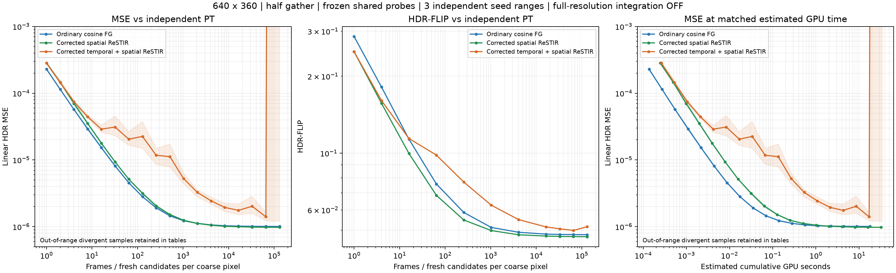
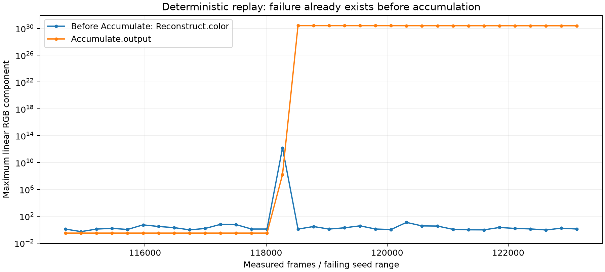
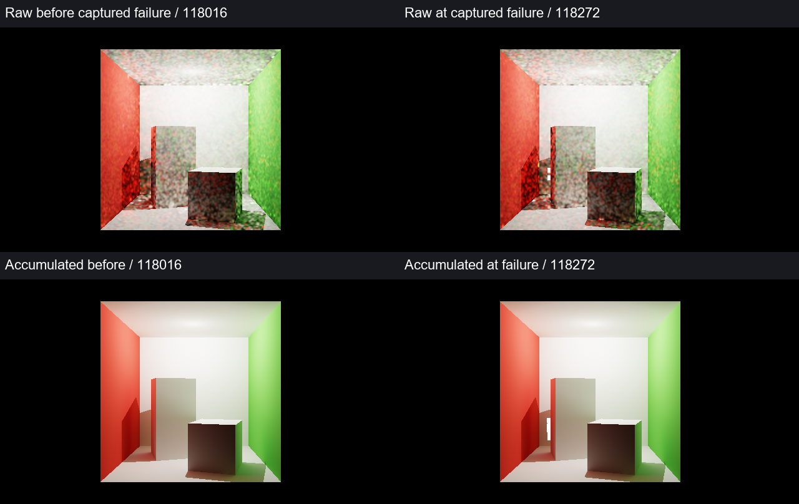
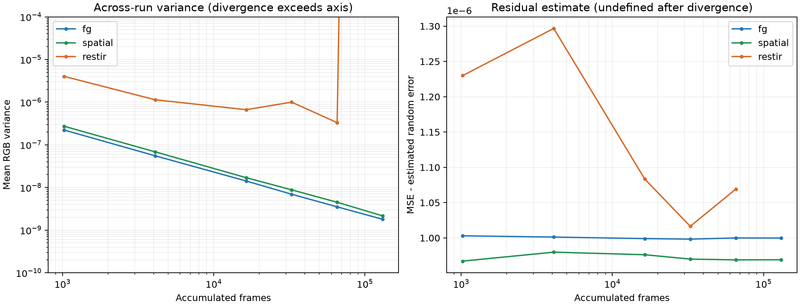
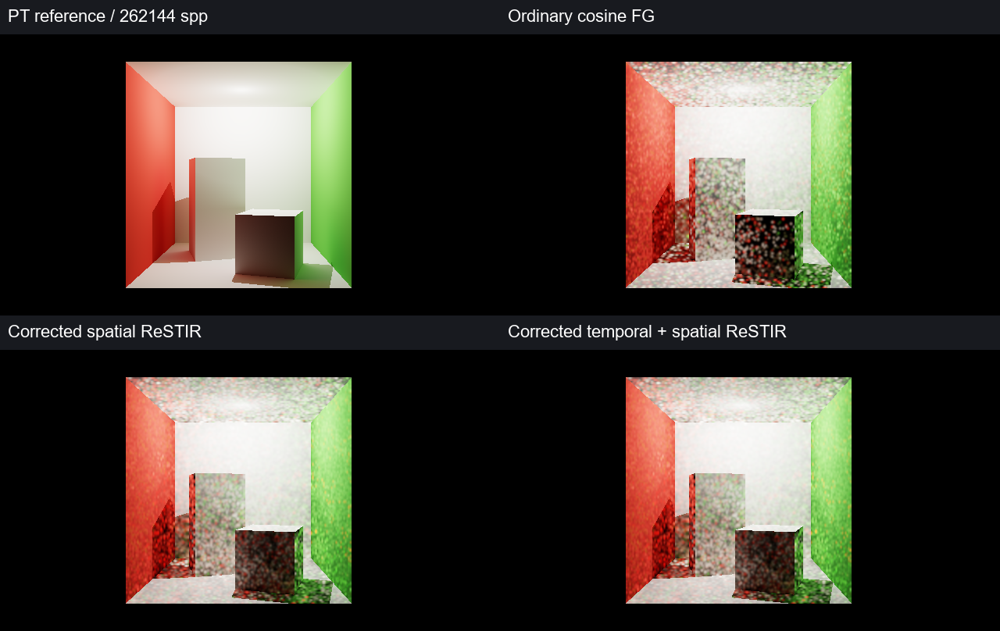
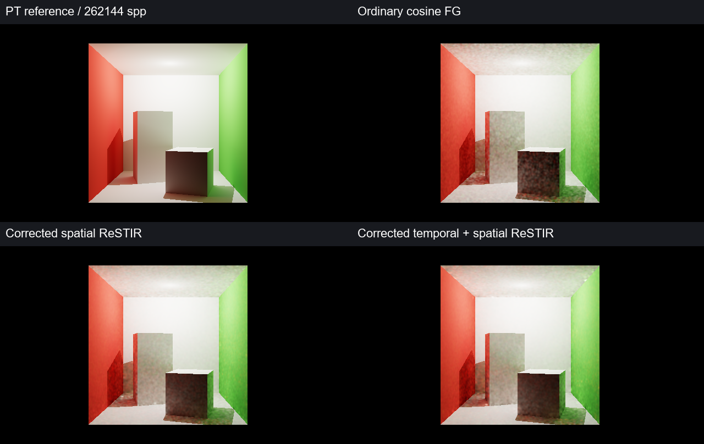
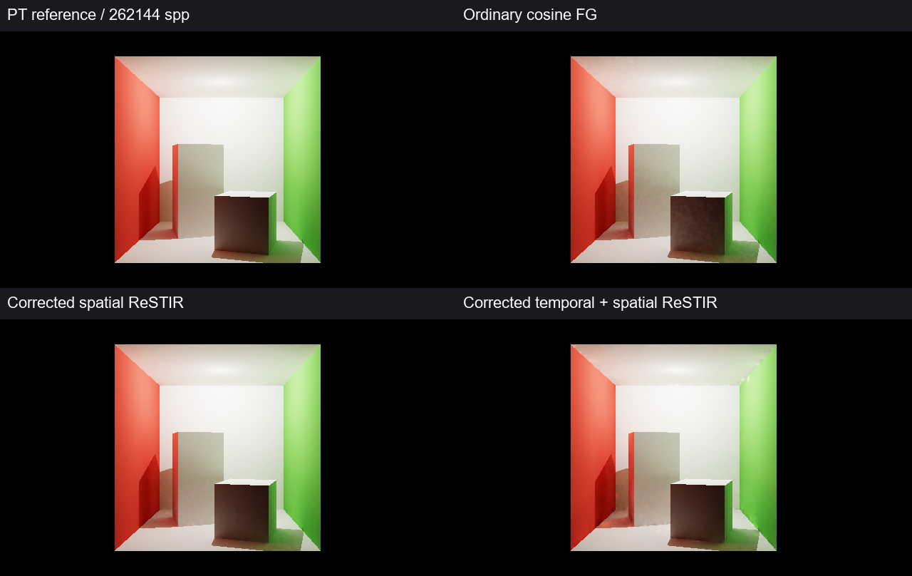
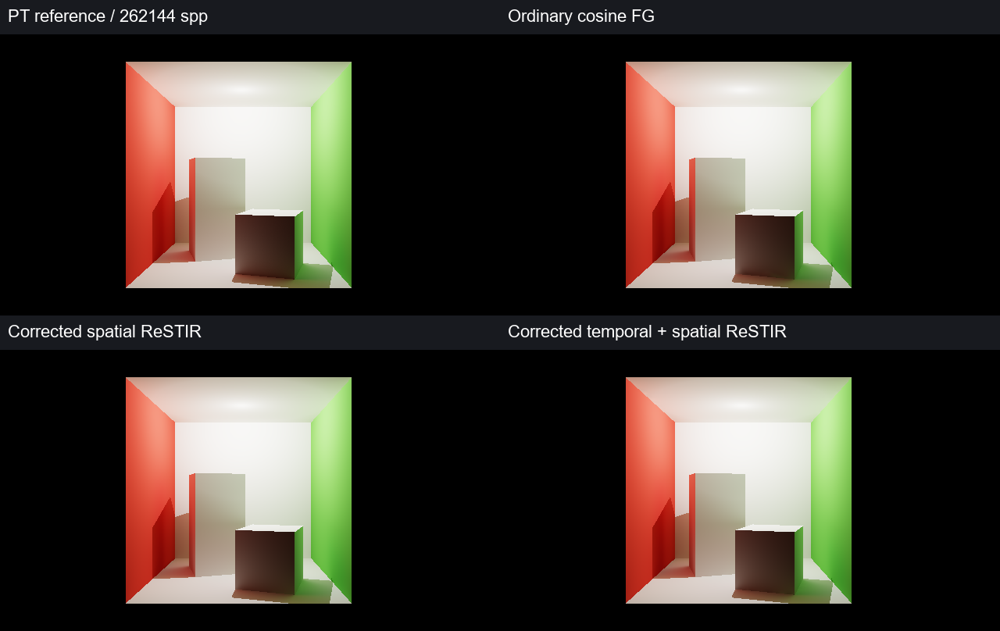
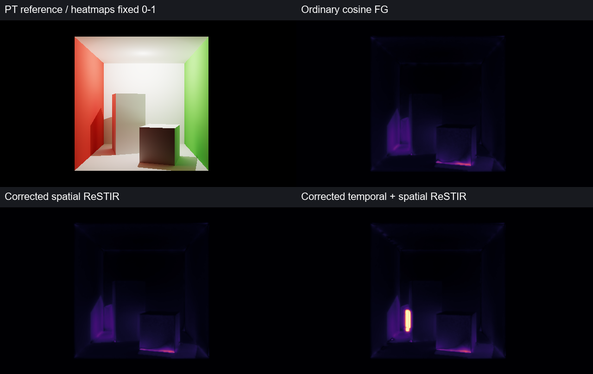

本报告比较普通 cosine FG、只开启空间复用的修正版 ReSTIR、时空复用均开启的修正版 ReSTIR。参考是独立的未降噪 PT，不再使用普通 FG 自身的长序列。
结论：当前完整时空 ReSTIR 没有显示 MSE 收敛加速，并在长时运行中出现可复现的数值失稳。仅空间复用已达到本实验稳定标准，MSE 约降低 3.0%、HDR-FLIP 约降低 1.8%，代价为约 1.81 倍 GPU 时间；低采样时感知误差有改善，但 MSE 下降没有更快。默认 ReSTIR 保持关闭。
640×360 输出、320×180 gather；Lambert Cornell、相同点光源和相机。每组先进行 8192 帧 probe 更新，再冻结，相同 probe 输出逐像素一致已验证。测量从空 reservoir、空 Accumulate 历史开始。jitter 开启；全分辨率积分关闭，使用同一 16 tap 重建；无 NRD。ReSTIR 使用来源可见性校正，空间 2 pass × 4 邻居、半径 8，时间 M 上限 20。每有效粗像素每帧一个新候选：普通 FG 为 cosine，ReSTIR 为 uniform，因此曲线比较的是实际方案，不是只隔离复用一项。
三个随机序列使用互不重叠的 frame seed 范围，每组累积 131072 帧。曲线是三个独立结果的误差平均，阴影为最小值到最大值，不是置信区间。GPU 时间轴按各方案稳定阶段测得的全图 GPU 帧耗时 × 帧数估算；不含公共 probe 预热、编译、读回和落盘。包含重连可见性射线和重建等开销，probe 测量期间冻结。
8 spp/frame，31 次表面/漫反射反弹，不使用 RR、ReSTIR 或降噪。明确启用固定 seed 接口并逐帧改变 seed，两条互不重叠的随机序列各 131072 spp，平均后得到 262144 spp 参考。两序列差分估计参考噪声 MSE 为 5.55284e-09；参考从 131072 spp 到 262144 spp 的图像变化 MSE 为 5.54514e-09。这是有限反弹、有限采样参考，不是解析真值。
MSE 在 GBuffer 可见场景像素上对线性 HDR RGB 求平均；HDR-FLIP 使用全组一致的自动选取曝光范围、ACES、67 PPD，随后在同一场景 mask 内平均。背景不计入指标。显示图统一 +3 EV，不影响线性指标。
重要异常：完整时空 ReSTIR 的第 3 个随机序列在 114688 与 122880 帧之间发生数值爆发，不能将该方案判为稳定收敛。失败数据完整保留，未从平均误差中删除。MSE 曲线主视图限制到 5e-7～1e-3，超出范围的失败结果见数值表。

| 累积帧 | FG MSE | FG FLIP | 空间 MSE | 空间 FLIP | 时空 MSE | 时空 FLIP |
|---|---|---|---|---|---|---|
| 1 | 0.0002286 | 0.28613 | 0.0002831 | 0.24952 | 0.0002831 | 0.24952 |
| 4 | 5.7117e-05 | 0.18145 | 7.0175e-05 | 0.15672 | 7.4588e-05 | 0.16068 |
| 16 | 1.5276e-05 | 0.11349 | 1.7864e-05 | 0.09978 | 2.8915e-05 | 0.11413 |
| 64 | 4.5526e-06 | 0.07581 | 5.1532e-06 | 0.06844 | 2.0479e-05 | 0.09836 |
| 256 | 1.9148e-06 | 0.05864 | 2.0429e-06 | 0.05481 | 1.1733e-05 | 0.07712 |
| 1024 | 1.2304e-06 | 0.05126 | 1.2447e-06 | 0.04983 | 5.2497e-06 | 0.06264 |
| 4096 | 1.062e-06 | 0.04905 | 1.0538e-06 | 0.04797 | 2.4389e-06 | 0.05499 |
| 16384 | 1.0188e-06 | 0.04826 | 9.9874e-07 | 0.04740 | 1.7536e-06 | 0.05148 |
| 32768 | 1.0108e-06 | 0.04811 | 9.8436e-07 | 0.04725 | 2.0209e-06 | 0.05060 |
| 65536 | 1.009e-06 | 0.04804 | 9.7896e-07 | 0.04718 | 1.4049e-06 | 0.04987 |
| 131072 | 1.0072e-06 | 0.04800 | 9.7685e-07 | 0.04712 | 3.9941e+55 | 0.05156 |
按第 3 组相同随机序列重新运行，保持 probe 冻结，并同时保存 Reconstruct.color 与 Accumulate.output。每 256 帧采样一次：第 118272 帧首次捕获到累积前亮度超过 1e6，原始图最大线性 RGB 达 1.51896e+12，影响 80 个像素；此前第 118016 帧的原始最大值为 1.24499。准确首次失稳帧仍在这两个检查点之间。
这证明问题已存在于进入 Accumulate 之前，不能归因于最终显示或单纯的时间累加误差。当前更应排查 reservoir 权重、支持域校正和历史递推；本实验没有修改渲染器，也没有用亮度裁剪隐藏失败。完整时空复用不能报告为“完全收敛后的正常偏差”。异常发生后，跨序列残差平方估计不再具有可解释性，已标记为不适用。


原计划延长正常序列的长尾测试，在发现另一独立序列失稳后停止，避免只展示成功序列。中途提出的补偿精度设置经源码复核未通过基类 set_properties 生效，相关中断记录已注明，未用它作为精度验证结论；复现测试实际仍为 Single，其累积前输出足以独立定位失稳所在阶段。独立复现与原数据均保留。
| 方案 | 平均 MSE vs PT | 平均 HDR-FLIP | 独立序列间方差 | 系统残差平方估计 | GPU ms/frame |
|---|---|---|---|---|---|
| Ordinary cosine FG | 1.00719e-06 | 0.047997 | 1.789e-09 | 9.99848e-07 | 0.1366 |
| Corrected spatial ReSTIR | 9.76845e-07 | 0.047125 | 2.153e-09 | 9.6914e-07 | 0.2469 |
| Corrected temporal + spatial ReSTIR | 3.9941e+55 | 0.051560 | 3.994e+55 | 不适用（数值失稳） | 0.2627 |
“系统残差平方估计” = 三序列平均图对 PT 的 MSE − 序列间方差/3 − PT 参考噪声估计。它用来区分随机噪声与长期偏离 PT 的残差；只有三个序列，仍是诊断估计，不能作为严格无偏性的证明。残差包含 DDGI 本身近似、半分辨率重建和复用误差等。

采用预先写入评分脚本的标准：连续两次翻倍后的平均 MSE 变化均小于 2%；最后一次翻倍平均图变化 MSE 小于对 PT 误差的 1%；平均图的序列间随机误差估计小于其对 PT 误差的 5%。未通过则明确不称为完全收敛。方差稳定或累积画面不闪，不等于图像正确。
| 方案 | 32k→64k MSE 变化 | 64k→128k MSE 变化 | 末次图像变化/误差 | 平均图随机误差/总误差 | 判定 |
|---|---|---|---|---|---|
| Ordinary cosine FG | -0.17% | -0.18% | 0.06% | 0.06% | 通过 |
| Corrected spatial ReSTIR | -0.55% | -0.22% | 0.07% | 0.07% | 通过 |
| Corrected temporal + spatial ReSTIR | -30.48% | 2842888552145999003627919579169083515572824015768226426760724480.00% | 100.00% | 100.00% | 未通过，不能标为完全收敛 |
性能说明：完整时空方案第 3 组的计时发生在数值失稳后，不宜作为正常性能依据；前两组未失稳状态的平均耗时为 0.2625 ms/frame。原始三组计时均保留。
在 131072 帧之后，采集两个各 64 连续帧的窗口，中间再等待 4096 帧；同时保存重建后的未累积图和 Accumulate 输出。下表为每像素 RGB 时间方差的场景平均，再对三个随机序列取平均。时间复用会造成相关性，短窗口可能低估长期变化，所以不单凭该表判断收敛。
| 方案 | 窗口 | 未累积图时间方差 | 累积图时间方差 |
|---|---|---|---|
| Ordinary cosine FG | 1 | 0.000228413 | 1.41891e-13 |
| Ordinary cosine FG | 2 | 0.000228581 | 1.35119e-13 |
| Corrected spatial ReSTIR | 1 | 0.00027636 | 1.75292e-13 |
| Corrected spatial ReSTIR | 2 | 0.000273545 | 1.62249e-13 |
| Corrected temporal + spatial ReSTIR | 1 | 0.000750513 | 8.05203e+47 |
| Corrected temporal + spatial ReSTIR | 2 | 0.000723087 | 7.10545e+47 |
以下为第一个随机序列，保留单次运行的实际噪声；不是三次运行图像的平均。




三序列平均图相对 PT 的 HDR-FLIP；Magma 色标固定 0–1，暗紫误差小、黄白误差大。不同方案没有分别拉伸色标。

脚本：tests/ddgi/restir_pt_convergence.py、score_restir_pt_convergence.py。原始 EXR、场景参数、运行记录、源码哈希和 profiler 输出位于 build/restir-pt-convergence；机器可读结果见 summary.json。本次未改变渲染器默认设置，ReSTIR 仍默认关闭。